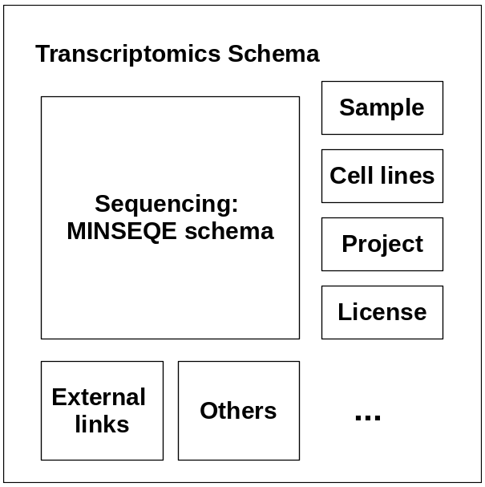

RESOLUTE FAIRification Recipe¶
Ingredients¶
Data transfer tools:
SFTP server
OneDrive
Amazon S3 Buckets
Data hosting platform:
raw data: SRA [Transcriptomics]
ProteomeXchange [Proteomics]
Samples metadata: BioSamples
Data standards
Transcriptomics community standard: MINSEQE
Sample metadata schema: BioSamples JSON schema
Data submission portal schema
FAIR evaluation standard:
This recipe provides an example of sample metadata extraction and curation practices, suggests a community standard for transcriptomics data and proposes a transcriptomics JSON schema, which allows direct submission of transcriptomics data to the public databases. Different approaches to assess the FAIR level of the dataset is also discussed.
Sample metadata ETL pipeline¶
The RESOLUTE datasets include 21 samples of seven cell lines. Each cell line has three replicates. The first draft of cell line metadata was first submitted to the NCBI SRA database and stored in the NCBI BioSample database. The raw sample metadata includes cell line name, provider and other administrative information.
To avoid ambiguity and provide detailed cell line information, the RESOLUTE cell lines were linked to cell lines in the Cellosaurus databases by the Cellosaurus accession ID, for example, cell line “HCT 116” was linked to accession “CVCL_0291”. Cellosaurus also provided enriched cell line information, including disease, species of origin, cell line category. Such information was fetched from the Cellosaurus website and mapped to corresponding samples.
Besides the cell line enriched cell line annotation, the RESOLUTE Data Release Plan also specified the cell line provider, culturing conditions and quality control information. Such information is also added to the cell line. License information was also mapped to the metadata.
The sample metadata can be found in the EBI Biosamples database with additional curation. For example, in sample SAMN11893688, all missing values were omitted. Attribute cell line, organism, sex and tissue were mapped to ontologies in the OLS database. All curations can record can be found here.
Transcriptomics data community standard¶
Minimum Information about a high-throughput SEQuencing Experiment (MINSEQE) is a recommended community standard of transcriptomics data. It defined five elements of transcriptomics data that shall be harvested, including metadata, sequence read data, final processed data and experimental protocols.
FAIRsharing organization interpreted the MINSEQE guidelines and translated them into a machine-readable MINSEQE recommended JSON schema. The FAIRsharing MINSEQE JSON schema provided a framework of transcriptomics data. When it comes to different experiments, the actual data be extended. Here is an example of RESOLUTE transcriptomics data following this schema
One limitation of the FAIRsharing MINSEQE schema is that it is incompatible to the submission standards of popular transcriptomics database, like the European Nucleotide Archive(ENA). Transcriptomics data following the FAIRsharing MINSEQE standard must be modified to be submitted.

Figure 1: Transcriptomics schema
To solve this problem, we proposed a transcriptomics schema which follows the EBI Data Submission Portal (DSP) standard, as well as compatible with the MINSEQE guidelines. The new transcriptomics schema is based on the MINSEQE standard, also allows enriched sample, cell lines, project metadata as different building blocks (Figure 1). This schema is compatible with the DSP schema which allows data validated against this schema to be directly submitted to the DSP and distributed to all related databases. (Note: This schema is still actively updated. Feedback welcomed)
FAIR assessment¶
The level of “FAIRness” of the RESOLUTE transcriptomics was first determined using the CMMI maturity model described in this document. The results of this first assessment can be found here. In a follow-up meeting, we defined actions that could be taken to increase the level for certain indicators (see this document). These actions were defined within Github.
A new FAIRplus maturity model was set up, based on the RDA indicators. The focus was only on the indicators regarding Findability/Discoverability at that point. Before we could use this model however, the indicators were updated within the RDA initiative. We used their new indicators) (for findability, v0.01) and their level definition to determine the levels for both the transcriptomics and proteomics datasets. The result can be found here.
In the meantime, an improved version of the RDA indicators was released (v0.02). In the results document a comparison/mapping is made between v0.02 and v0.01 for possible future reference.
We have updated the scoring for the transcriptomics data to this new version (v0.02).
Results of the scoring (to v0.01):
transcriptomics data set (as in SRA)
58% for the mandatory indicators
63% for the recommended indicators
4 indicators were thought to be not applicable
proteomics data set (as in OwnCloud)
42% for the mandatory indicators
44% for the recommended indicators
6 indicators were thought to be not applicable
The FAIRness level of the transcriptomics dataset for the HUH-7 cell line (as published on SRA) was also determined using the FAIR evaluation services (an online evaluator). The result was this dataset only passed for 3 out of the 22 indicators tested. This was mainly due to the limitations on machine readability of metadata and license details within SRA. The complete results can be viewed here.
Summary¶
Cellosaurus accession is recommended as an identifier for cell lines. Cellosaurus also provides enriched information about different cell lines.
EBI BioSamples database is the master hosting platform for sample metadata, allowing curation and basic ontology annotation.
MINSEQE is the recommended community standard for transcriptomics data.
A new transcriptomics schema was proposed which reflects the transcriptomics community guideline and supported by the EBI database submission platform.